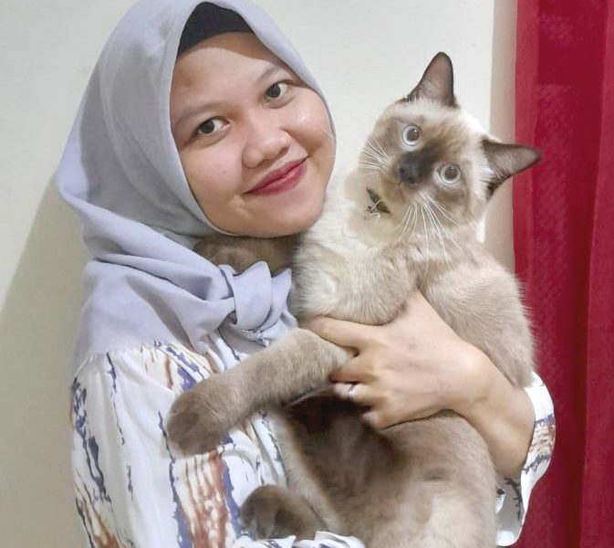

Drh. Vici Eko Handayani
Drh. Tizani Qisthina

Drh. Winusudyasari
Drh. Duanti

Eris Effendi
Agus Setiadi
Visi dan Misi klinik Citrapet and Vet sangat mempedulikan kebutuhan para klien yang datang beserta dengan owner.
Melayani dengan penuh cinta dan kasih sayang, dan berusaha yang terbaik agar klien dan klinik mendapatkan pelayanan yang maksimal. Menyediakan